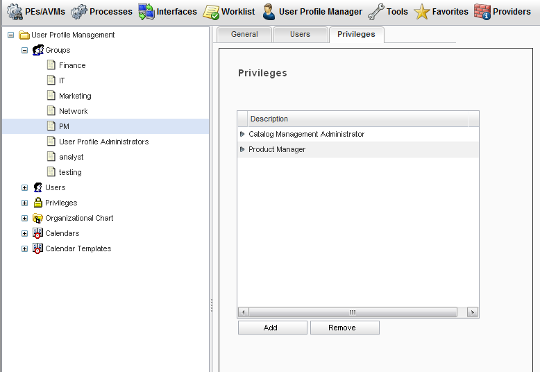
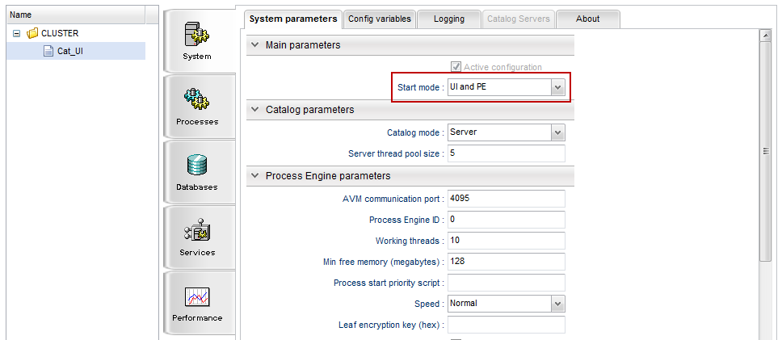

Product Lifecycle Designer Setup
This section describes the process for setting up the Product Lifecycle Designer (PLD) feature including setting up users and their privileges.
- Assign the Product Manager privilege to the user who will be creating the change request. This assignment enables the change request functionality or the
 button. Within the System Administration Application, add the Product Manager privilege to the user who is creating the change requests.
button. Within the System Administration Application, add the Product Manager privilege to the user who is creating the change requests.
 - Create the users with the correct privileges. Along with the Catalog Management Administrator privilege, each user should have an appropriate role privilege. When assigning tasks, the PLD workflow will assign a task to the user with the appropriate privilege. The change request provides the ability to assign an approval task to various users. The users specified in the workflow and their associated privilege are:
Participant Privilege Business Analyst Business Analyst IT/Network Analyst IT/Support Marketing Marketing Manager Network Operations Network Operations Pricing Economics Pricing & Economics Product Manager Product Manager Product Modeler Product Modeler Revenue Assurance Revenue Assurance - The Process Engine must be turned on within the defined Catalog node. Within the Configuration application, ensure that the Process Engine is started by setting the Start mode value to either UI and PE or to PE only. Navigate to the Configuration application (http://localhost:8080/cwf/config/index.html) and ensure that the Start mode value is set correctly to start the Process Engine:
 - Ensure that there is a Default Calendar set up. The workflow will use the default calendar that is set up in the System Administration Application to initiate the PLD process. If the default calendar is not set up properly the workflow tasks will not be assigned to the users. Refer to Velocity Studio's System Administration Application User Guide > User Profile Manager > Calendars documentation for more details.